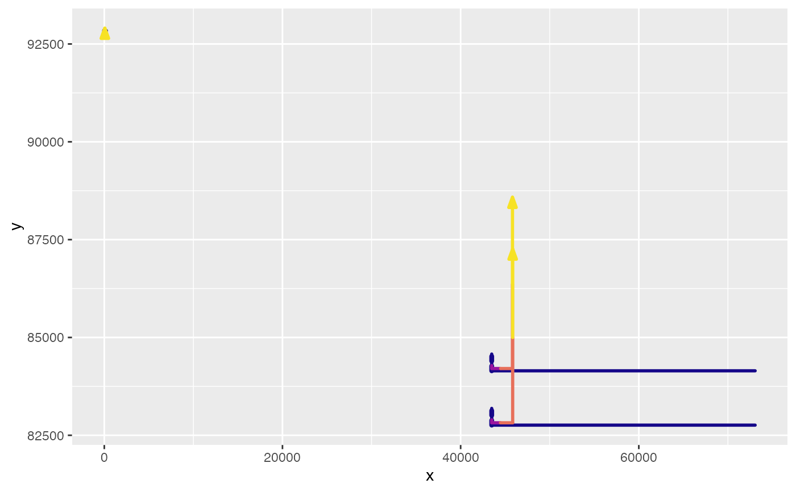

This is a helper function for path_graphs().
There is normally no need to call this function.
Usage
rebound_graphs_helper(
.path_data,
.points_data = NULL,
.grid_data = NULL,
.indifference_data = NULL,
graph_params = ReboundTools::path_graph_params,
graph_types = ReboundTools::graph_types,
graph_df_colnames = ReboundTools::graph_df_colnames
)Arguments
- .path_data
A data frame of paths to be added to the graph. The columns "colour" and "size" control the colour and width of the segment.
- .points_data
A data frame of points between rebound effects. Default is
NULL, meaning that no data points are to be added to the graphs.- .grid_data
A data frame of lines to be added to the graph. Default is
NULL, meaning that no grid lines are to be added to the graphs.- .indifference_data
A data frame of indifference curves to be added to the graph. Default is
NULL, meaning no indifference curves are added to the graph.- graph_params
A list of appearance parameters for this graph. Default is
ReboundTools::path_graph_params.- graph_types
A list of graph types. Default is
ReboundTools::graph_types.- graph_df_colnames
The names of column names in data frames of graph data. Default is
ReboundTools::graph_df_colnames.
Examples
load_eeu_data() %>%
rebound_analysis() %>%
energy_paths() %>%
rebound_graphs_helper()
